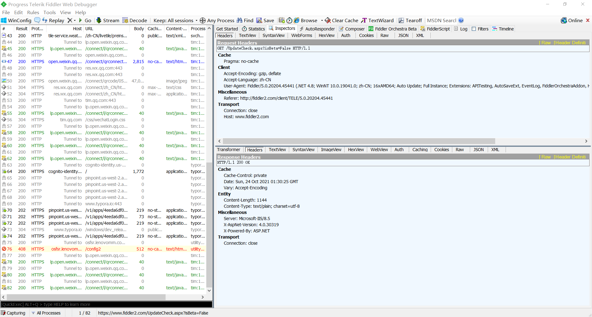
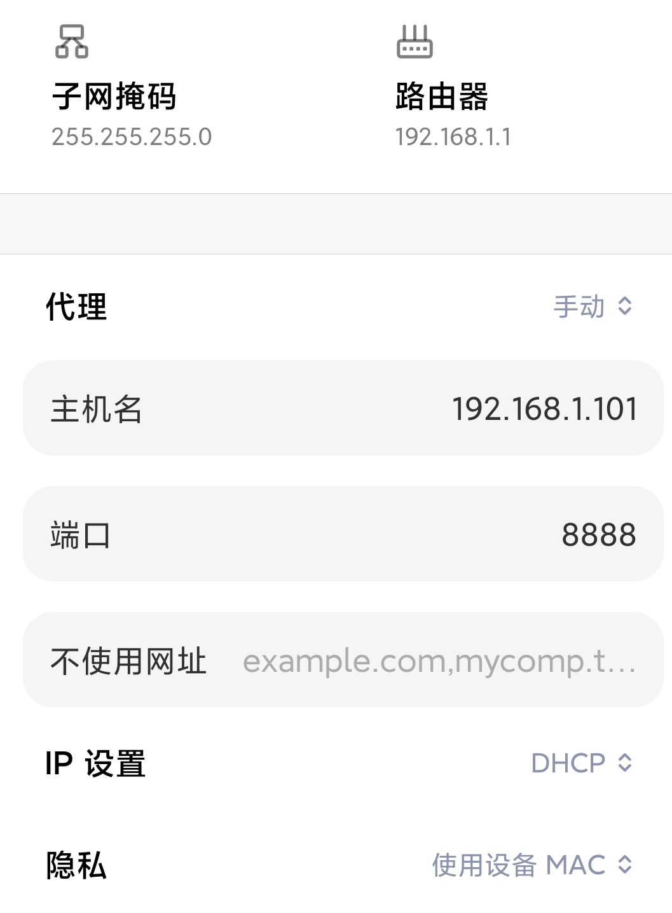
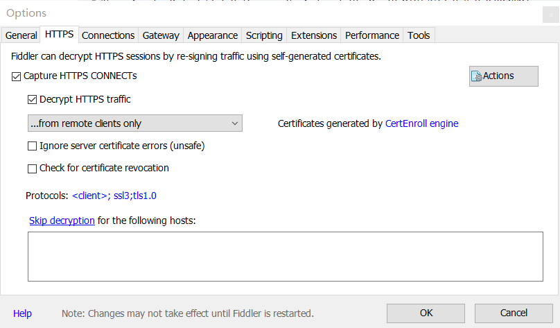
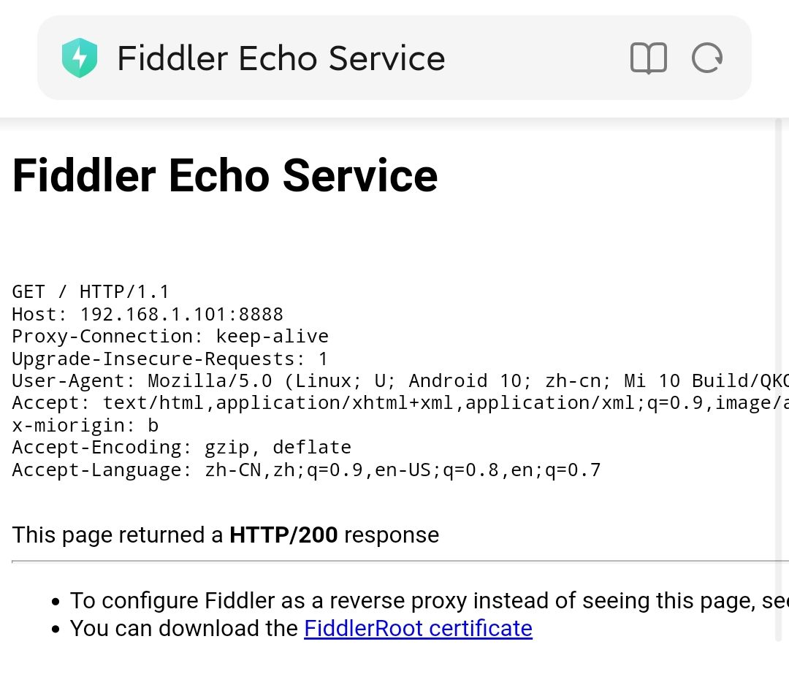
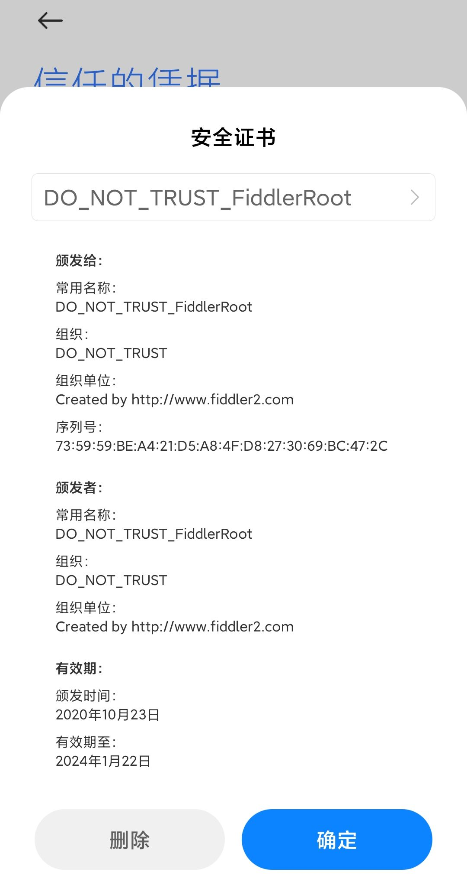
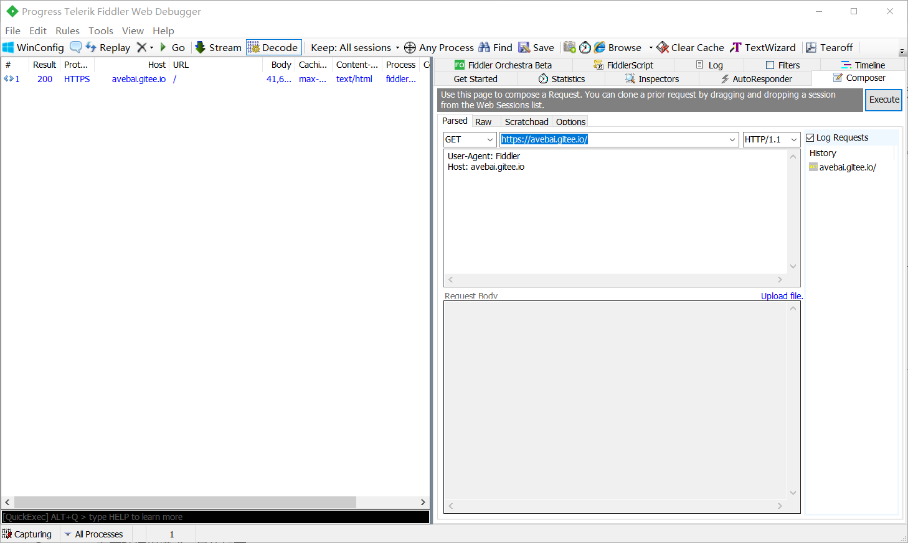
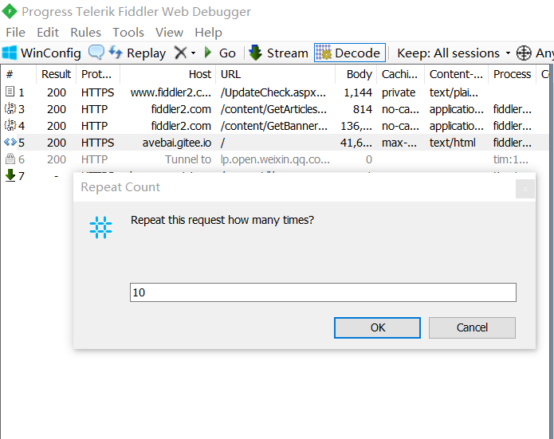
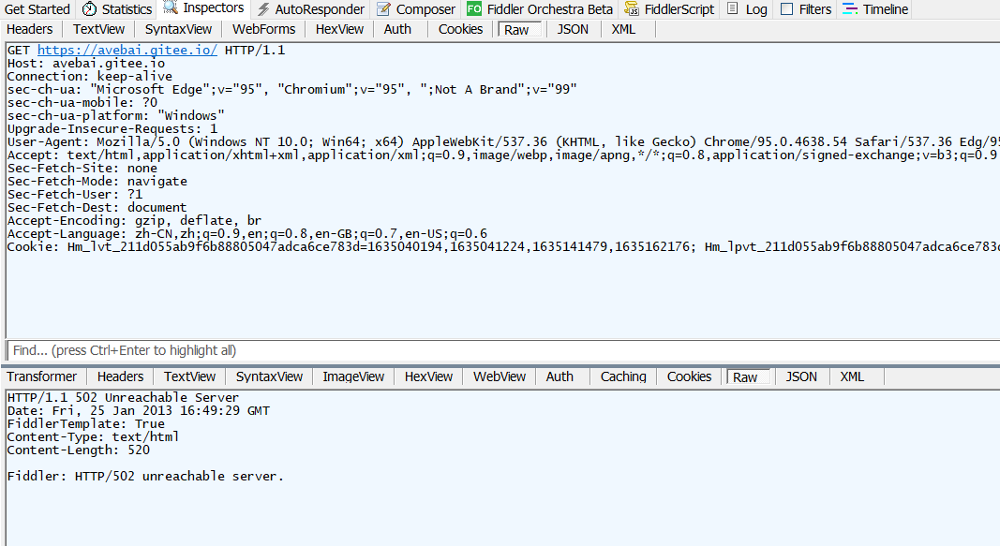

Fiddler抓包
[TOC]
基本界面

左半边是 Web Sessions 列表（会话列表），显示捕捉到的每个 Session 的简短信息。
下面的一行黑框是 QuickExec（命令行工具），可以输入简单的命令，例如输入 cls 可以清空 Web Sessions。
右半边是 Inspectors 选项卡（功能面板），上面是 HTTP 请求报文，下面是 HTTP 响应报文。其中 Raw 选项卡可以查看完整的消息，Headers 选项卡只查看消息中的 Header。
Web Sessions 列表栏中包含的信息如下：
| # | Result | Protocol | Host | URL | Body | Caching | Content-Type | Process |
|---|---|---|---|---|---|---|---|---|
| Fiddler 生成的 ID | 响应的状态码 | 使用的协议：HTTP/HTTPS | 服务器的主机名和端口号 | 路径 | 响应中包含的字节数 | 跟缓存相关的字段的值 | 响应中 Content-Type 的值 | 对应本地 zhuabao |
原理
Fiddler 是以代理 Web 服务器的形式工作的，它使用代理地址：127.0.0.1，端口：8888。
Fiddler 启动的时候，会偷偷地把 Internet 选项中的代理修改为 127.0.0.1，端口：8888。当 Fiddler 退出的时候，它会自动在 Internet 选项中取消代理，这样就不会影响别的程序。如果 Fiddler 非正常退出，这时候因为 Fiddler 没有自动注销，会造成网页无法访问，解决办法是重新启动 Fiddler。
捕获 HTTP/HTTPS 协议的数据包
（1）启动 Fiddler，打开任何一个浏览器，输入 https://avebai.gitee.io/。
（2）回到 Fiddler 界面，在 Session 列表中，会看到 Fiddler 已经捕获到了很多 Session。可以选择任何一个 Session，然后选择 Inspectors 选项卡，就可以查看详细内容。
单击 Fiddler 左下角的 “Capturing” 按钮可以设置开始抓包或者停止抓包。
HTTP 协议报文结构
HTTP 报文分 2 个：一个是 HTTP 请求报文，一个是 HTTP 响应报文。
（1）HTTP 请求报文的结构
1 | //起始行（Request line） |
HTTP 请求报文分为 3 部分。其中首部第一行表示请求方法（POST/GET）+URI（不是URL）+协议版本，如果是 GET 就没有主体。
（2）HTTP 响应报文的结构
1 | //起始行（Response line） |
Response 消息的结构和 Request 消息的结构基本一样。
起始行包括协议版本+状态码+状态码信息。
| 状态码 | 描述 |
|---|---|
| 1XX | 信息提示，表示请求已被成功接收，继续处理 |
| 2XX | 成功，表示请求已被成功接收 |
| 3XX | 重定向，必须进一步处理 |
| 4XX | 客户端错误，请求有语法错误或请求无法实现 |
| 5XX | 服务器错误，服务器未能实现合法的请求 |
常见的状态码：
- 200：OK，服务器成功处理了请求。
- 204：No Content，没有内容。
- 206：Partial Content，部分内容。
- 301/302：Moved Permanently，请求的 URL 已移走。
- 304：Not Modified，上次的文档已被缓存且是最新的，可以继续使用。
- 400：Bad Request，客户端请求有语法错误。
- 403：Forbidden，拒绝访问。
- 404：Not Found，未找到资源。
- 401：Unauthorized，未授权错误禁止访问。
- 501：Internal Server Error，服务器内部错误。
- 503：Server Unavailable，服务器暂时不可用。
（3）URL
URL 的全称是Uniform Resource Locator，中文译名为“统一资源定位符”，用于完整地描述 Internet 上某一处资源的地址。
URI 的全称是 Uniform Resource Identifier，中文译名为“统一资源标识符”，用来唯一地标识一个资源。而 URL 是一种具体的 URI。
URL 的基本格式：协议+域名+资源路径+参数+锚
协议一般为 http、https、ftp 等；锚以 ‘#’ 开头。
参数可以通过 fiddler 中的 WebForms 查看。
锚是页面内部的超链接，可以快速到达本页内响应的位置。
（4）HTTP 请求方法
| 方法 | 作用 |
|---|---|
| GET | 请求指定的页面信息并返回实体主体。 |
| HEAD | 类似 GET，但返回的响应中没有具体内容，用于获取报文头部。 |
| POST | 向指定资源提交数据进行处理，数据被包含在请求体中。可能导致新资源的建立或对已有资源的修改。 |
| PUT | 向服务器传送数据。 |
| DELETE | 请求服务器删除指定页面。 |
GET 和 POST 的区别：
- GET 提交的数据会放在 URL 之后，以 ‘？’ 分割 URL 和传输的数据，参数之间以 ‘&’ 相连。POST 方法是把提交的数据放在 HTTP 包的 Body 中。
- GET 提交的数据大小有限制（因为浏览器对 URL 的长度有限制），而 POST 方法提交的数据大小没有限制。
- GET 方式提交数据会带来安全问题，比如一个登录页面通过 GET 方式提交数据时，用户名和密码将出现在 URL 上。
（5）Header
| Header 字段 | 描述 |
|---|---|
| Cookie | |
| Accept | 表示浏览器可以接受的媒体类型。 |
| Accept-Encoding | 表示浏览器支持的压缩方式。 |
| Accept-Language | 表示浏览器支持的语言。 |
| User-Agent | 告诉服务器，浏览器客户端的相关信息，可以修改它伪装成任何客户端 |
| Referer | 用来让服务器判断用户的来源页面 |
| Connection | 表示 TCP 连接信息 |
| Host | 指定被请求的主机和端口号 |
设置断点拦截 HTTP 请求
一、全局断点
（1）启动 Fiddler，在菜单栏中单击 Rules -> Automatic Breakpoint -> Before Requests。
（2）打开浏览器，输入“www.baidu.com”，这时任务栏上的 Fiddler 图标闪烁，说明 Fiddler 拦截住了 HTTP 请求。
（3）在菜单栏中单击 Rules-> Automatic Breakpoint->Disable（因为已经拦截住想要的 HTTP 请求了，其他 HTTP 请求就不需要拦截了）。
（4）选中需要修改的 HTTP 请求，选中 “Inspectors” 面板，可以使用 Raw 选项卡修改请求文件。
（5）单击绿色的 “Run to Completion” 按钮放行。
二、单个断点
命令行输入：bpm www.baidu.cm（拦截 www.baidu.com 请求）
输入命令：bpu （解除拦截）
设置断点修改 HTTP 响应
一、全局断点
（1）启动 Fiddler，在菜单栏中单击 Rules -> Automatic Breakpoint -> After Response。
（2）打开浏览器，输入“www.baidu.com”，这时任务栏上的 Fiddler 图标闪烁，说明 Fiddler 拦截住了 HTTP 请求。
（3）在菜单栏中单击 Rules-> Automatic Breakpoint->Disable（因为已经拦截住想要的 HTTP 请求了，其他 HTTP 请求就不需要拦截了）。
（4）选中需要修改的 HTTP 请求，选中 “Inspectors” 面板，可以使用 Raw 选项卡修改响应文件。
（5）单击绿色的 “Run to Completion” 按钮放行。
二、单个断点
命令行输入：bpafter www.baidu.com（拦截 www.baidu.com 响应）
输入命令：bpafter （解除拦截）
手机抓包
（1）启动 Fiddler，单击菜单栏中 Tools->Options->Connections，选中“Allow remote computers to connect”，Fiddler 的默认端口号是 8888。
（2）以小米 10 为例，打开手机中的设置->WLAN，找到手机当前连接的 WiFi，修改代理服务器，服务器主机名为 Fiddler 所在电脑的 IP 地址，服务器端口为 8888，如下图所示：

在 Fiddler 中，将鼠标放在右上方的“online”图标上能看到主机 IP 地址。
（3）现在在手机上打开网址或者应用就能在 Fiddler 中捕获手机发出的 HTTP 包，可以设置过滤条件，如下：

（4）要捕获 HTTPS 包就要在手机上安装证书。打开手机浏览器，输入 http://192.168.1.101:8888 ，点击图中蓝色字段下载证书，点击证书文件进行安装即可。

（5）点击设置->系统安全->信任的凭证->用户 可以看到安装的证书，点击删除即可卸载。

Fiddler 发送 HTTP/HTTPS 请求
功能组件 Composer 可以用来发送 HTTP/HTTPS 请求。

Composer 有两种编辑模式：
- Parsed模式。这个模式比较常用，把请求分为 3 个部分：请求起始行、请求 Header 和请求 Body。
- Raw模式。该模式需要一行一行地写一个请求。
也可以把会话列表中的 HTTP/HTTPS 请求拖拽到 Composer 中编辑后再发送出去。
Replay 菜单
在会话列表中，选中一个或者多个 Session，右键->Replay，可以看到一个菜单，详细说明如下：
| Reissue Requests | 重复发送请求 |
|---|---|
| Reissue Unconditionally | 无条件反复发送选中的请求 |
| Reissue and Edit | 把选中的请求以原来的形式重新发送。在每个Session中设置断点，可以在发送给服务器之前修改请求 |
| Reissue and Verify | 重新发送请求，检查响应，如果和上一个请求一样就变成绿色 |
| Reissue Sequentially | 选中多个Session会按顺序重新发送请求，单线程 |
| Reissue from Composer | 在Composer中编辑该请求 |
| Revisit in IE | 在IE浏览器中用Get方法访问该请求 |
简单的性能测试
在 Web Sessions 列表中，选中一个或者多个 Session，然后按下 Shift 键的同时单击“Replay”按钮，会弹出提示框，要求指定每个请求被重新发送的次数。Fiddler 会用多线程同时发送该请求，相当于模拟了很多用户同时访问该请求。

安全测试之重放攻击
重放攻击（Replay Attacks），指黑客通过抓包的方式，得到客户端的请求数据及请求连接，重复地向服务器发送请求的行为。
重放攻击的危害很大，比如下单、投票、点赞等功能，攻击者可以对用户的请求进行抓包，然后重复发送来进行刷单、刷票等操作。
如何防止重放攻击？
在 HTTP/HTTPS 请求中添加时间戳（stamp）和数字签名（sign），可以防止重放攻击。也就是说每次发送请求时需要多传两个参数，分别为 stamp 和 sign。数字签名使用对称加密，保证请求的有效性；时间戳保证请求的时效性。
Fiddler 实现弱网测试
Fiddler 是通过延迟发送或接收数据的时间来模拟限速的。
需要模拟出以下 3 种弱网场景：
（1）网络慢或延迟，导致加载时间长。
（2）网络中断，Web 服务器返回 500 等状态码。
（3）网络超时，HTTP/HTTPS 请求发出去后，很久都没有响应。
精确控制网速
（1）启动 Fiddler，选择 Rules -> Performances -> Simulate Modem Speeds，此时打开一个网页可以感觉到明显变慢。
（2）点击菜单 Rules->Customize Rules，在 FiddlerScript 中找到如下一段代码（ctrl+F 快速查找）：
1 | if (m_SimulateModem) { |
可以修改数值以精确控制网速。
网络取值的算法就是 1000/下载速度 = 需要延迟的时间（ms），比如 50kbit/s 需要延迟 200ms 来接收数据。
模拟网络中断
用 Fiddler 可以下断点，伪造 HTTP 响应。客户端发出的 HTTP 请求根本没有到达服务器，而是被 Fiddler 直接返回了一个伪造的 HTTP 响应。
具体做法是用 Fiddler 拦截住客户端发出来的 HTTP 请求，然后在“Choose Response”选中需要返回的状态码，然后单击“Run to Completion”返回给客户端，如下图：

返回的页面信息被改为 502。
Fiddler 模拟网络超时
利用 Fiddler 下断点的功能拦截住移动客户端发出的 HTTP 请求，这样就相当于网络超时了，然后再检查客户端有没有重发或者超时的机制。